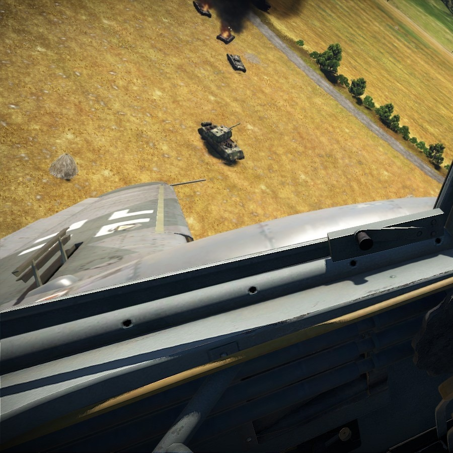

Juan Jose Arias Jaramillo

Nací el 22 de octubre del año 2001, en Medellín,
actualmente vivo en Girardota, me gradué del bachillerato en el año 2019 en el colegio San Rafael de
Copacabana
Tengo 18 años, estudio en la Universidad de Medellín, estoy en la carrera de ingenieria de sistemas
en segundo semestre, me gustan mucho los deportes del automotor, el cross country, y el ciclomontañismo.